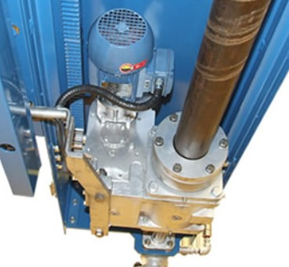

Dados principais
| TAG | RE-601037 |
|---|---|
| Fabricante | PROMOEN |
| Tipo do equipamento | MOTOREDUTOR PROMOEN |
| Modelo | SRRP - P2 |
| Potência | MOTOR 1,5 CV 4 POLOS |
| Relação de redução | S/I |
| RPM entrada/saída | 1725 |
| Lubrificante | 220 |
| Quantidade de óleo | 2 |
| Local / Área | REDUTOR DE FULIGEM RETRÁTIL SF-05 LD - SUPER SEC / PRIM |
| Observações | OS Nº 5967 - GOLD |
Acessos rápidos
Lista de Peças indisponível
Manual indisponível
Fotos adicionais indisponível
Voltar para lista geral
Link desta página
https://goldredutoresinpasa-web.github.io/DATABOOK-INPASA/equipamentos/RE-601037/